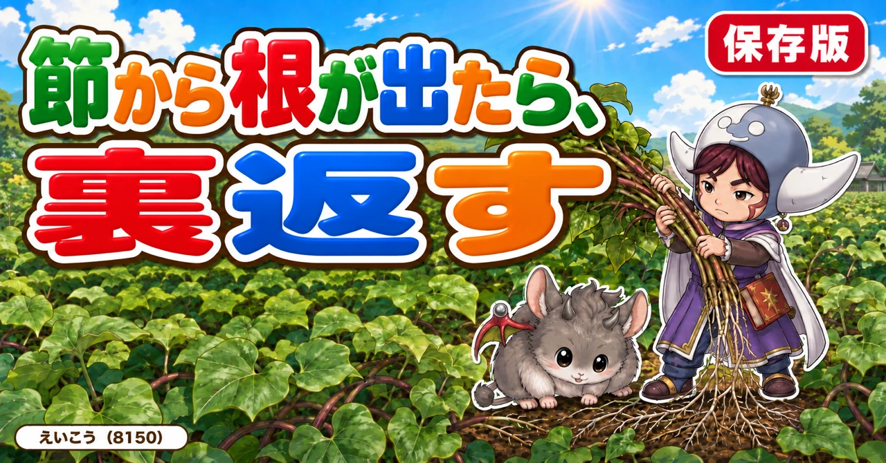
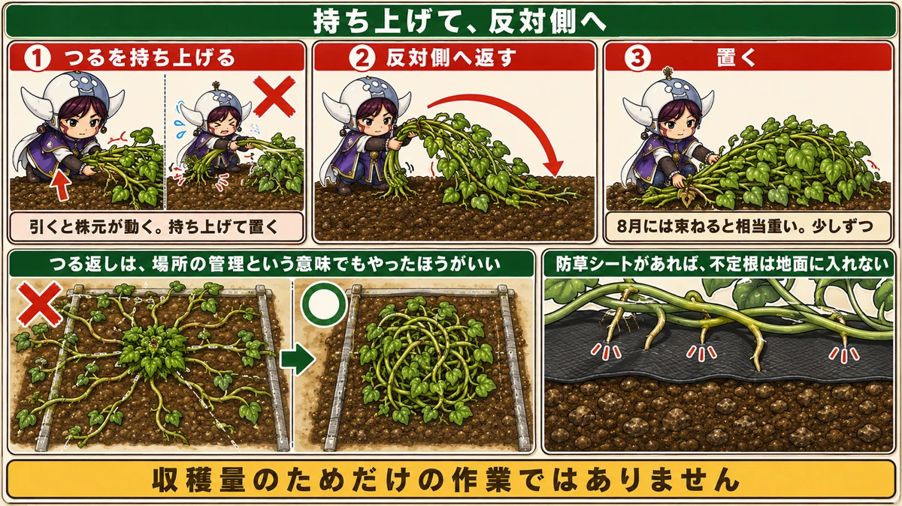
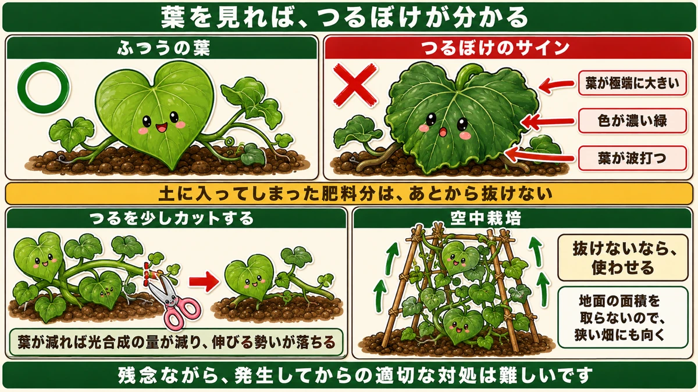

さつまいものつる管理帳｜つる返しの判断・つるぼけ・夏の手入れ

どうも、8150（えいこう）です🌱 家庭菜園歴8年、理科の教員免許を持っていて、有機・無農薬で野菜を育てています。
📖 この記事の目次
この記事で分かること
- つる返しは『節から出た根の管理』『区画からのはみ出し対策』『勢いが強すぎる株の手入れ』を分けて考えます。
- 夏の何日にやるかより、土に根が張っているか、通路をふさいでいるかを見て作業を決めます。
- 正常な株が広がっただけなら、まず向きを変えて葉を残します。つるを短く切る判断には、株の勢いの確認が必要です。
- 大きな葉や濃い葉色は点検のきっかけ。葉の見た目だけで、いもができていないと決めません。
- 立体栽培は場所を節約する選択肢ですが、支えの補強と伸びたつるの誘導が必要です。
- 夏につるを挿して植え直すことはできます。ただし、根づくことと秋に十分な収穫があることは別です。
さつまいもが元気に広がるのはうれしいですよね。でも、気づくと通路まで葉っぱでいっぱい。「これ、どこまで伸びるつもりやろ・・・」となります🍠
そこで出てくるのが、つる返しという作業です。地面をはっているつるを持ち上げ、途中で張った根を土から離し、つるの置き場所を変えます。名前だけ聞くと特別な技みたいですが、まずは『どのつるを、どこへ戻すか』を決める手入れです。
このページでは、夏のつる管理を中心に、植え付けから収穫までの判断を整理します。はみ出しが気になるなら手順の章へ、葉ばかり立派で心配なら症状の章へ進んでください。つる返しをする派・しない派の話が気になるみなさんには、説明が分かれていることをまとめた章も用意しました。
大事なのは、作業名を覚えて全部実行することより、いまの株に必要な手入れを選ぶことです。まだ根が張っていないつるまで毎回動かす必要はありません。まず一本の節を見てみる。それくらいからで大丈夫です☺️
早見：さつまいもの育て方（ひと目で分かる数字）
植え付けから収穫までの目安
以下は、栽培動画で示される目安や栽培例を整理したものです。種袋の数値のように、そのまま一つの品種へ当てはめるものではありません。地域や土の条件に合わせ、購入した苗の栽培案内も確認してください。
- 植え時：栽培の説明には5〜6月という目安があります。一方、4月中旬〜5月下旬とする説明や、4月下旬に植えた栽培例もあります。地域や気温の条件を外して、早い日付だけを採用しないでください。
- 株間：30〜45cmという説明があります。30cmで栽培している例もあり、一本のうねに何株入れるかを考えるときの目安になります。
- うね幅：60cmの説明と、1mの栽培例があります。つるを置く通路や作業場所まで、この幅に含むかはそろっていません。数字だけで区画全体の広さを決めないようにします。
- うねの高さ：20〜30cm程度の高いうねをすすめる説明があります。水がたまりやすい場所では、幅と高さを別々に考えます。
- 元肥：前の野菜に使った肥料が残る畑では、追加しない考え方があります。無肥料の栽培例と少量を入れる栽培例があり、全員共通の施肥量にはできません。
- 追肥：つる返しをしたからといって、決まった日に補うものではありません。砂質などで養分が乏しい場合の説明と、肥料が残る畑で加えない説明を分けます。
- 収穫時期：9〜11月という説明と、10月からを目安にする説明があります。植えた日・品種・その年の育ち方でずれるため、秋に試し掘りして判断します。
- 収穫までの日数：全品種に共通する一つの日数にはできません。購入苗の案内を残し、植え付け日と実際のいもの大きさを照らし合わせます。
- 連作の間隔：品種や病気の履歴を問わず、何年あければよいと一律には指定できません。前年の不調や病気の有無を記録し、地域の栽培案内を確かめます。
数字のない欄は、書き忘れではありません。分からない値をそれらしく埋めるより、確認する場所をはっきりさせたほうが、畑で使える早見になります。収穫までの日数を知りたいときは、いま育てている品種の案内と植えた日の記録が出発点です。
夏のつる管理に使う目安
- 点検する季節：7〜8月に伸び方が目立つ説明が多くあります。早く植えた株と遅く植えた株では、同じ月でも広がり方が違います。
- 初回のつる返し：8月初旬を目安にする説明がありますが、日付の指定がない説明もあります。途中の根が土へ入ったかを見て判断します。
- 作業回数：一度で終了と決めません。向きを変えたあとに根が張り直したり、つるがまた外へ伸びたりすれば、その部分を見直します。
- つるの長さ：立体栽培で約2mになった観察例があり、放置すれば5mほど伸びるという説明もあります。同じ条件の標準値ではないので、実際の境界までの距離を優先します。
- 植え直しに使うつる：先端に葉が約7枚ある部分を使う説明があります。切る長さの数字には確認できない部分があるため、このページでは一律に指定しません。
- 植え直したあとの観察：約2週間で定着して新しい芽が伸びた例があります。すべての株で同じ日数になる保証ではありません。
- 遅い植え付けの限度：7月中とする説明と、本州の中間地ならお盆頃まで可能とする説明があります。後者を寒い地域にもそのまま当てはめないでください。
『8月になったから全部返す』より、『土に入った根がある部分を返す』という使い方です。暦は見に行くきっかけ、実物は作業するかどうかの判断材料。役割を分けると迷いが減ります。
畑へ行く前にそろえる記録
- 品種名と苗を植えた日が分かる。
- 前の作物と、そのときの肥料の使い方を思い出せる。
- 通路・隣の区画・ほかの野菜との境界が分かる。
- 前回つるを動かした日や、葉の異常に気づいた日を残している。
きっちりした栽培日誌でなくても大丈夫です。スマートフォンに日付入りの写真を一枚残すだけでも、葉の広がりや色の変化を比べられます。『なんかすごく伸びた』を『前に見たときは境界の内側、今日は通路に出た』に変えると、次の手入れが具体的になります。
作業の手順（時期の順）
植える前：秋より先に、夏の置き場所を考える
- 区画の中で、さつまいもに使える範囲を決めます。苗が入る場所だけでなく、夏につるを戻せる場所と、足を置く通路も確認します。
- 前の野菜の栽培履歴を見直します。元肥や追肥を十分入れていた場所なら、その分が残る可能性を考え、さつまいも用の肥料を機械的に重ねません。
- 水が残りやすい場所かを確かめます。雨のあともぬかるむなら、つる返し以前に、排水と土の状態を考える必要があります。
- 地面にはわせるか、立体的に支えるかを選びます。上へ誘導するなら、葉が大きくなる前から支えを置く場所を用意します。
苗を植えるときは、まだつるが短いんですよね。だから空いた通路を見て「余裕あるやん」と感じやすい。でも夏には、その余裕も葉で埋まります。収穫するいもの場所だけでなく、葉が働くための場所も必要です。
肥料の判断もこの段階で行います。つるぼけが心配だから、土の履歴を確認する。育ちが弱そうだから、まず根や水分を確認する。どちらも、見た目の印象だけで何かを足すより先にできることです。
植え付け直後：古い葉だけで苗の生死を決めない
- 植えた日を記録します。夏の植え直しでも、もとの株と同じ日付で扱わず、新しく挿した日を残します。
- もともとついていた葉と、新しく伸びる芽を分けて見ます。古い葉が傷んでも、茎や新芽が生きている場合があります。
- 先端に新しい芽が出るか、茎の状態が前より悪くなっていないかを観察します。葉がなくなったという理由だけですぐ抜きません。
- 株元に草が出たら、苗を巻き込まないように小さなうちに除きます。根づく前の苗の周囲を、一気にかき回さないようにします。
葉がしおれた姿を見ると、正直あせりますよね。でも『古い葉が落ちる』『先端まで枯れる』『新しい芽が伸びる』は同じ状態ではありません。植え直すか迷ったら、まず見る場所を先端と茎まで広げてください。
一方、茎も傷んで状態が悪化し、新しい動きが見えない株まで、元気な株と同じ見込みで待ち続けないことも大切です。夏の植え直しは、待つ間にも残りの栽培期間が短くなります。日付と株の変化をセットで判断します。
初夏：つるが混み合う前に方向をそろえる
- どの株から出たつるか、株元までたどって確認します。交差したつるを無理にほどこうとせず、まず行き先を見ます。
- 境界へ向かって伸びているものを、区画の内側へ誘導します。道路や隣の区画に入る前なら、移す量も少なく済みます。
- 通路の草や植え穴の草を、つるで見えなくなる前に取ります。地面を覆ってからでは、草とつるを見分ける手間が増えます。
- 次に点検しやすいように、つるの置き方と株元の位置を覚えておきます。写真を残してもよいです。
この時期の方向づけは、いもを大きくするための処置と分けて考えてください。目的はまず、作業できる場所を残すことです。後で草を取るために全部持ち上げるより、見えているうちに少し整えるほうが取りかかりやすいです。
草を取るときも、葉の下へ鎌を入れてまとめて刈ると、さつまいものつるまで切るおそれがあります。株の近くは何が生えているかを見てから作業します。勢いよく一振りで終了！ とできたら楽なんですけど、ここは小分けが安心です。
夏の点検：持ち上げる前に三つの場所を見る
- つるの先端を見ます。区画の外、通路、別の野菜の上へ伸びていないかを確かめます。
- 途中の節を見ます。土に触れる部分に根が出て、地面へ入っているかを確かめます。シートがある場所では、端や隙間を重点的に見ます。
- 葉と茎を見ます。葉の大きさ・色・波打ち、茎の太さ、伸びる勢い、食べられた部分を点検します。
- 『向きを変えるだけ』『土に張った根を離す』『勢いが強すぎるので別の手入れを考える』のどれかを選びます。
一度の点検で、この三つを別々に見るのがコツです。根が出ていても境界内に収まる株、根は出ていなくても道路へ向かう株、葉が極端に茂った株。それぞれ、困っていることが違います。
つる返しという名前に全部を押し込むと、作業したかどうかだけが気になります。実際には『はみ出しが戻ったか』『土への接触が減ったか』『葉の様子を確かめたか』まで見れば十分。ひっくり返した回数を競う作業ではないんですよね。
つる返し：小分けに浮かせて、区画の内側へ置く
- 移したつるを置ける場所を先に確保します。空いたうね側や、土との接触が少ない場所を選び、ほかの野菜を覆わないか見ます。
- 作業する部分を小さく分けます。夏に茂ったつるは重くなるので、一株分を大きな束にして一度に動かそうとしません。
- 地面に張った途中の根を土から離しながら、つるを浮かせます。強い抵抗がある部分は、どこが土についているのかを確認してから動かします。
- 浮かせたつるの向きを変え、用意した場所へ置きます。根が土へ入り直しやすいか、境界へ戻りやすいかも見ます。
- 作業後に株元と葉を確認します。元の植え位置が大きく動いていないか、つるを踏んでいないかを見て、そこで一区切りにします。
途中の根をすべて一本ずつ切り取る必要はありません。根を土から離して向きを変える作業と、ハサミでつるを切る作業は別です。刃物を使わなくてもできる管理から始めます。
返したつるを、すぐ元の向きへ戻す必要もありません。区画の内側に置いたまま、次の観察へ進めます。ただし、置いた場所でも土に触れれば再び根が張ることがあります。置き場所を変えたら永久に根が出ない、というわけではないです。
暑い時期の作業なので、区画全部を一度に終わらせようとしないでください。今日は境界に近い部分、次は残りの通路側という区切りでも管理できます。重い束を抱えるより、見える範囲を小さくすると、つるの取り違えにも気づきやすくなります。

つるぼけが気になるとき：切る前に株の条件をそろえる
- 前の作物の肥料、今回の元肥や追肥を振り返ります。葉が濃いという印象だけで、肥料過多と確定しません。
- ほかの作物や背の高い草に覆われていないかを見ます。葉が多くても、十分な光を受けられない場所があります。
- 葉の量と新しいつるの勢いを見ます。勢いが弱い株と、太いつるが盛んに伸びる株を同じように切りません。
- 途中の根が広く土へ入っているなら、まずその接触を減らす管理を考えます。肥料をさらに吸う場所を減らすという考え方です。
- 切る方法を選ぶ場合も、正常な株の葉までまとめて減らす指示に広げず、強く伸びた部分の管理として扱います。
『つるぼけ対策で葉を減らす』という説明には、株が旺盛であるという条件があります。葉が少ない株、食害で葉を失った株、植え直したばかりの株では話が違います。伸びすぎて困る株への対策を、全部の株に横展開しないでください。
切ったら土の肥料が帳消しになるわけでもありません。手入れ後は、その株がどう変わったかを観察します。すぐにいもの太りまで確認できる処置ではないので、短い期間で結果を決めつけないようにします。
立体栽培を選ぶとき：支えと誘導の手間を見込む
- 上へつるを置いたときに、隣の区画や別の野菜の日当たりを邪魔しない場所を選びます。地面が空いても、葉の影はできます。
- 支えをしっかり固定します。葉が広がると風を受けるので、最初の軽いつるだけを見て強度を判断しません。
- つるを支えに沿って誘導します。勝手に全部が絡んで上がる前提にせず、伸びた脇のつるも確かめます。
- 地面へ下がったつるがないか、支えが揺れていないかを定期的に見ます。風のあとには、葉の重みと固定部分の様子も確認します。
- 自分が通える頻度で管理できるかを見直します。誘導が追いつかないなら、地面の置き場所を含めて整理します。
立体栽培、見た目はちょっと面白いです。でも『上へ行ったら、あとはお任せ』ではありません。脇から新しいつるが出て、また下へ伸びることもあります。省スペースと省手間は別々に考えると、始めてからの「思ってたんと違う」が減ります。
夏に株が枯れたとき：健全なつるを使う植え直し
- もとの株がどう悪くなったかを確かめます。原因不明の異常がある株を、苗を増やすための親株に選ばないようにします。
- 健全に伸びているつるの先端を候補にします。葉が約7枚ある部分を使う説明がありますが、長さの数字だけで選ぶ作業にはしません。
- これから育てられる季節が残るか、地域の植え付け時期を確認します。夏に挿せるという説明を、どこでも十分な収穫ができる保証として受け取らないでください。
- 植え直した日を記録し、その後は新しい芽や茎の変化を見ます。根づいたように見えても、もとの株と同じ収穫予定にはしません。
- 大きないもの収穫を最初から約束せず、残った期間でどこまで育つかを見る栽培として扱います。
苗が売っていない場合に、手元の健全な株からつるを使えるのは選択肢になります。ただ、夏に全国の店で販売が終わると決まっているわけではありません。購入できる苗があるかも確かめたうえで、植え直し方を選びます。
秋：葉の勢いと、実際のいもの大きさを分けて確認する
- 植え付けからの経過と、品種の収穫案内を見直します。春に植えた株と夏に植え直した株を、一緒の暦で判断しません。
- 収穫時期に近づいたら、一部を試し掘りして太り方を確認します。葉が黄色くなるまで待つだけでは、適期をつかみにくい場合があります。
- まだ小さいなら、残りの季節と葉の状態を見て待つか考えます。葉が残っているから必ず今後大きくなる、とは言い切れません。
- 自分が使いたい大きさになっていたら、本格的な収穫の段取りを考えます。つるが立派かどうかより、いもの実物が判断材料になります。
- 収穫結果を植え付け日や肥料の記録と一緒に残します。次の年は、結果につながった条件を見直せます。
途中の根や葉から『心配な可能性』を見つけることはできます。でも、地下のいもの状態を葉だけで全部読むのは難しいです。秋は実物で確かめる段階。地上の見た目と、掘って分かる結果を分けておくと、必要以上に落ち込まずに済むかなと思います。
失敗の見分け方（症状→原因→やること）
つるが土にくっついて、簡単には浮かない
- 症状：地面にはわせたつるの途中が、土に固定されたようになっています。
- 考えられる原因：節から出た根が地面に入っている可能性があります。何本ものつるが絡んで動かない場合とは分けます。
- やること：動かない部分の節を見て、根が張った位置を確かめます。必要な範囲だけ土から離し、根が入りにくい場所へつるを移します。
土に根が張ること自体は、植物の働きです。見つけただけで病気や失敗とは言えません。途中の発根を減らしたいのか、通路を空けたいのか、目的に合わせて扱います。
すでに何本も重なっていたら、一番上のつるから行き先を確認してください。全部を一度に引き上げようとするより、見える一本ずつを追うほうが状況をつかめます。つると根と雑草が一緒になると、なんか知恵の輪みたいになりますよね。力より、まず確認です。
つるが通路や隣の作物を覆っている
- 症状：歩く場所が葉で隠れる、区画の境界を越える、別の野菜の葉の上へ広がります。
- 考えられる原因：夏の伸長に対して、つるの置き場所や誘導が追いついていません。正常に伸びた株でも起こります。
- やること：区画の内側へ方向を変え、足場を確保します。収まらないなら、立体的に誘導できるか、栽培面積と管理の方法を見直します。
はみ出しだけを見て、つるぼけと判断しないでください。元気な株でもつるは長くなります。まず『伸びる向きが困る』のか『育ち方が偏っていそう』なのかを分けます。
通路を空けるときは、移した先も確認します。隣へ出たものを自分のトマトへかぶせたら、困りごとが引っ越しただけになってしまいます。置き場所は、境界内に入ることと、ほかの作物の光を奪わないことの両方で考えます。
葉が大きく濃い、つるや茎も勢いが強い
- 症状：葉一枚が目立って大きい、緑が濃い、葉に波打ちがある、茎が太く長いつるが伸びる、といった変化が重なります。
- 考えられる原因：肥料や前作の残りが強く効き、地上部の成長に偏っている可能性があります。ただし、葉の一項目だけで確定する基準はありません。
- やること：施肥の履歴、日当たり、途中の根の張り方を確認します。追加の肥料を急がず、根の接触を減らす管理や、旺盛な株に限った先端の管理を考えます。

この図は、観察する場所を見つけるために使ってください。大きい葉が一枚あるから『つるぼけ確定』、という診断には使いません。葉の大きさも色も、普段の株と比べてどうかを見るのが出発点です。
肥料の入れすぎを疑う場合、土の中からその成分だけを選んで取り出すことは、家庭菜園の手入れとして簡単にできません。そこでさらに何かを足すより、まず吸収する場所や葉の勢いの管理を考えます。手入れを増やした量が、そのまま回復量になるわけではないです。
葉は多いのに、ほかの作物の陰に入っている
- 症状：つるは伸びていますが、かぼちゃなど別の作物や背の高い草に覆われ、日中も葉が陰になります。
- 考えられる原因：葉の量に対して、光を受けられる場所が不足している可能性があります。肥料が多い場合とは違う点検が必要です。
- やること：覆っているものと株の位置を確認し、日当たりを妨げる草やつるの配置を整理します。さつまいもの葉までまとめて切らないようにします。
いもの太りが悪いと、肥料不足を思い浮かべやすいです。でも、葉に光が届かないときに肥料だけ追加しても、光を受ける場所は増えません。まず葉の上に何があるか。地面の中を想像する前に、見える原因から確認すると整理できます。
葉が食べられ、穴や欠けが増える
- 症状：葉に穴が開き、縁が欠け、健全な葉が減っていきます。
- 考えられる原因：葉を食べる虫の被害が考えられます。少数の傷と、継続して葉を失う被害を分けて見ます。
- やること：葉の表裏と株の周囲を見て、虫がいれば確認して取り除きます。前の点検から被害が広がったかも比べます。
数枚に穴があるだけで、秋の収穫をあきらめる必要はありません。一方、広い範囲で葉がなくなる状態を放置してよいとも言えません。『虫がいたか』『新しい食害が増えたか』『健全な葉がどれくらい残るか』で、次に見に行くときの点検場所を決めます。
つるぼけ対策で葉を減らす話を、この株へそのまま当てはめないでください。すでに葉を食べられた株では、葉を残す側の判断が必要になります。
葉に斑点や色むらがある、一株だけ黄色い
- 症状：葉に不自然な斑点や色の変化が見られる、ある株だけ黄色くなり、ほかの株と様子が違います。
- 考えられる原因：病気を含めて複数の原因が考えられます。斑点だからウイルス、黄色いから立枯れ病と、見た目だけで名前を決めません。
- やること：株全体と葉の表裏を記録し、変化が広がるか観察します。急に悪化する、複数株へ同じ異常が広がる場合は、地域の相談窓口などで原因の確認を進めます。
異常な葉が増えていないか点検し、病気の種類や重さによっては株を取り除く必要があります。でも『斑点を見つけたら全部抜く』という意味ではありません。原因が分からない状態で、病名ごとの対処を決めないようにします。
病気が疑われる株から、新しい苗を作るのも急ぎません。見た目がよい先端だけなら安心とは限らないので、植え直しの材料には健全な株を選ぶことを優先します。
雨のあと、土がいつまでもぬかるむ
- 症状：雨がやんでも株元や通路に水が残り、土が乾きにくい状態です。
- 考えられる原因：排水の悪さや、まとまった雨による冠水が考えられます。つる返しをしていないこととは別の問題です。
- やること：水が残る場所を確認し、株を踏み荒らさずに排水の状態を見直します。葉や茎が悪化していないかも継続して確かめます。
地上の葉が一見元気でも、地下の状態まで保証されるわけではありません。逆に、冠水したら必ず全部失敗というわけでもありません。水が残った株からも収穫できた栽培例があり、地上の様子だけでは最後の結果を決められません。水が残った日と、その後の株の変化を記録しておくと、秋の判断につながります。
立体栽培の支えが揺れ、つるが地面へ下がる
- 症状：葉が茂ってから支えが不安定になる、脇のつるが下へ伸びて再び通路を覆います。
- 考えられる原因：風を受ける面積や葉の重みに対して、固定や補強が不足している可能性があります。新しく伸びたつるの誘導が追いついていない場合もあります。
- やること：固定部分と支えを点検し、安全に作業できる範囲で補強します。下へ伸びたつるを誘導し直し、地面に張った根も確認します。
立体栽培だから地面への発根がゼロになるわけではありません。下へ垂れたつるが土に触れたら、その部分は地面にはわせた場合と同じように点検します。『上で育てているはず』より、『いまどこに触れているか』を見るのが役立ちます。
植え直したつるは根づいたが、秋にいもが小さい
- 症状：夏に挿したつるに新しい芽は出たものの、収穫時に大きないもが十分ありません。
- 考えられる原因：根づいてから太るまでの期間が短かった可能性があります。春植えと同じ収穫を期待しすぎていた場合もあります。
- やること：植え直した日と残りの季節を振り返ります。定着の成否と収穫量を分け、翌年は植え付け時期の計画へ戻します。
新芽が出たときは、そこまでの育ちは進んでいます。でもその先には、葉を増やし、地下でいもを育てる段階が残ります。『根が出たのに小さい、だから手入れが全部間違い』と一括りにしないでください。どの段階までは進み、どこで時間が足りなかったかを分けると、次の栽培で直す場所が見えます。
説明が分かれていること
つる返しをすると、いもが必ず大きくなるのか
- Aという説明：途中の節に根が張り、そこでいもができようとすると、株元へ集めたかった養分が分かれる。そのため、つる返しで途中の発根を管理するとよい、という考え方があります。
- Bという説明：今の品種では途中の根にいもができにくく、肥大を目的としたつる返しは不要だ、という考え方があります。いもの太りへの影響は大きくないとする説明もあります。
- どう考えればよいか：品種や栽培条件をそろえず、どちらかを全株共通の決まりにしません。つる返しで増収する割合や、いもの重量がどれだけ増すかは、ここでは示せません。
別の説明では実験への言及もありますが、その実験の品種や条件までは明らかではありません。『実験という言葉があるから、必ず同じ結果になる』とは受け取らないようにします。
一方、通路へ出たつるを戻す必要は、肥大効果の議論とは別です。いもの大きさへの影響が小さくても、隣の区画へ出てよいわけではありません。この二つを分けるだけで、『やるべきか、やらないべきか』の二択から少し離れられます。
夏に一回でよいのか、繰り返すのか
- Aという説明：夏の初回の目安として、8月初旬などを挙げる説明があります。
- Bという説明：特定の日を決めず、節の根が土に入ったら作業する説明や、その後も繰り返して管理する説明があります。
- どう考えればよいか：初回の目安と、その後の点検を別にします。一度返したあとも、根の張り直しと越境があれば必要な部分を見直します。
日程だけ決めると、早く根が張った株を待たせたり、まだ必要のない株を動かしたりします。夏の管理は『この日まで待つ』より、『見に行ったときに何が起きているか』を優先してください。
作業間隔の数字には、不明瞭な表記もあります。このページではそれを補って固定の週数にはしません。前回と同じ場所にまた根が張っているか、境界へ伸びたかを、作業のきっかけにします。
伸びすぎた先端は、切ってもよいのか
- Aという説明：正常に育つ株では、葉を切って減らすよりも、つるを返して向きを変えるほうをすすめる説明があります。
- Bという説明：つるの勢いが非常に強い株では、先端を切って管理しても大きな問題はないとする説明があります。作業の負担や、隣へ出たつるの管理も理由になります。
- どう考えればよいか：弱い株や葉の少ない株へ、旺盛な株の処置を当てはめないことが共通の注意点です。まず方向を変えて収まるかを考え、切るなら株の勢いと残す葉を確認します。
『切るのはだめ』『切ってよい』だけを見ると、話がぶつかって見えます。でも、対象が正常な株なのか、つるぼけ気味の旺盛な株なのかで条件が違います。みなさんの株がどちらに近いかを見ずに、便利そうなほうだけを選ばないでください。
元肥や追肥は、なしでよいのか
- Aという説明：前の野菜の肥料が残る畑では追加せず、無肥料で育てる考え方があります。窒素が多い状態を避けるためです。
- Bという説明：少量を入れる栽培例や、砂質など養分の乏しい土で少量の追肥を考える説明があります。
- どう考えればよいか：肥料を使わないという結論だけでなく、その土にすでに何があるかまで見ます。残りが多い畑と、養分の少ない土を一緒にしないことが大切です。
つる返しで途中の根を土から離したからといって、株全体が急に肥料不足になったと判断する根拠にはなりません。『根を離す作業』と『肥料を補う判断』を、自動的にセットにしないでください。
具体的な肥料の種類や量は、土の履歴と品種の栽培案内を確かめて決めます。前作の肥料や土の性質が違うので、全員用の一つの配合にはできません。
立体栽培は、つるぼけを治せるのか
- Aという説明：上へ養分を運ぶことでエネルギーを使い、つるぼけの症状を和らげるのではないか、という説明があります。
- Bという説明：つるを地面から離すことで、途中の根が土へ入りにくくなるという説明があります。狭い場所で育てる工夫としても使われます。
- どう考えればよいか：エネルギー消費の説明は、土の窒素がどれだけ減ったかを測った結果ではありません。省スペースや土との接触を減らす利点と、つるぼけの回復保証を分けます。
上へ誘導すれば、土に入れた肥料が帳消しになるという仕組みにはしません。何を変えたかを具体的に見るなら、つるが占める場所、土に触れる節、光の当たり方、作業の負担です。そこを見て、手元の畑に合う方法かを判断します。
夏の植え直しは、いつまで間に合うのか
- Aという説明：植え替えは7月中を限度とする説明や、夏に植えるなら大きないもをたくさん期待しないという説明があります。
- Bという説明：本州の中間地では、お盆頃までつるを植えられるという説明があります。
- どう考えればよいか：地域の条件と、何を『間に合う』と呼ぶかを確認します。発根する、いもが少しできる、十分な大きさで多く穫れる、は別の到達点です。
遅い植え付けが可能な例を、早植えと同じ収穫が得られる話へ変えないでください。寒い時期が早く来る地域では、残りの育つ期間も違います。栽培例は選択肢を知るために使い、全国共通の締切としては扱いません。
よくある質問
すべての株につる返しをする必要がありますか
一律の必須作業にはできません。途中の発根が気になる株、通路や境界へ伸びた株など、管理する理由がある部分を選びます。根が張っておらず区画内にも収まっているなら、まず観察を続ける選択肢があります。
シートを敷いてあれば、点検しなくてよいですか
土に直接触れる場所は減りますが、端・隙間・植え穴には土が見えることがあります。そこに根が入っていないかを確かめてください。はみ出しや葉の異常の点検は、シートがあっても必要です。
返したつるは、元の向きへ戻しますか
毎回元へ戻す手順にはしません。うね側へ移したままでよいという説明があります。大事なのは元通りの見た目より、境界の内側へ収まり、途中の根が土へ入りにくい置き方になっているかです。
節に残った細い根を全部取り除きますか
一本ずつ取り除く必要はありません。途中の根を地面から離す作業として考えます。株元にある根まで一緒に扱わず、いま浮かせている部分がどこなのかを確認してください。
つるが長いだけで、つるぼけですか
長さだけでは判断できません。葉の大きさや色、茎の太さ、施肥の履歴、日当たりを合わせて見ます。地下のいもがどう太っているかは、収穫時期に近づいたら試し掘りで確かめます。
濃い葉を見つけたら、すぐ切ればよいですか
葉色だけで切る判断をしません。旺盛な株への先端管理と、弱い株の手入れは分けます。まず正常な葉がどれくらいあり、つるがどう伸びているかを見てください。
つる返しのあとに追肥しますか
作業後の追肥を決まりにはしません。途中の根を離したことと、土の養分が不足することは別です。前作の肥料が残る畑では、追加が過剰になる可能性も考えます。
土に根が張っていないのに、通路へ出ています
方向を変える管理はできます。発根を防ぐ目的がなくても、通路や隣の区画を守る理由があります。葉を保ったまま、区画の内側へ置けるかを先に考えてください。
葉を虫に食べられた株も、同じように切りますか
葉の少ない株を、勢いの強い株と同じようには切りません。まず食害が続いているか、健全な葉が残っているかを確認します。つるぼけ対策の『葉を減らす』を、食害がある株へそのまま適用しないでください。
立体栽培なら、いもも空中にできますか
ここでいう立体栽培は、地上のつるを支えて上へ誘導する方法です。収穫するいもは土の中で根が太ったものです。ぶら下がる実のように育てる方法とは違います。
立体栽培にすれば、管理の時間が減りますか
地面の占有は減らせても、誘導や支えの点検が増えます。脇から伸びたつるをそのままにすると、再び地面を覆うこともあります。場所の余裕と通える頻度の両方で選びます。
葉の斑点は、ウイルス病でしょうか
斑点だけでは特定できません。株全体と葉の表裏を記録し、増え方や悪化の様子を確かめます。原因が分からないうちは、異常のある株から苗を増やさず、必要に応じて相談します。
7月に苗が買えなければ、今年は終わりですか
健全な株があれば、そのつるを使って植え直す選択肢があります。ただし、地域によって残りの栽培期間が違います。発根できることと、期待する収穫に届くことを分けて考えてください。
挿したつるは、2週間で必ず根づきますか
約2週間で定着した例はありますが、全国共通の保証ではありません。日数だけで合否を決めず、新しい芽や茎の変化を見ます。古い葉が傷んだだけで、すぐ失敗と判断しないようにします。
夏のつるを残せば、翌年の苗にもできますか
つるを冬越しさせて翌年用に残す方法の説明はあります。ただし、夏の植え直しとは別の管理です。冬越しの結果は管理の条件にも左右されるので、一本から必ず何本増えるという約束にはしません。
秋まで葉が緑なら、まだ収穫しないほうがよいですか
葉色だけを収穫の合図にしません。肥料が効いている株では、葉色が抜けるまで待つと、いもが大きくなりすぎる場合があるという説明もあります。植えた日と品種を見直し、一部の大きさを確かめます。
試し掘りで小さかったら、つる返しが足りませんでしたか
それだけでは原因を決められません。植え付けの遅れ、日照、土や雨の状態なども振り返ります。つる返しの回数を増やせば必ず太る、という関係にしないでください。
忙しくて全部のつるを整えられません
まず道路・通路・隣の区画へ出た部分を優先します。その次に、根が強く張った場所や異常のある株を見ます。全部を同じ日に終わらせようとせず、困っている場所から小さく区切って進めれば大丈夫です。
学ぶ：さつまいものしくみ🔬
土に触れた節は、新しい根を出す場所になる
つるの途中をよく見ると、葉が出ている区切りがあります。そこが節です。さつまいもでは、この節の周辺から根が出ることがあります。伸びたつるが湿った土に触れると、そこが新しく根づく場所になり得ます。
こうした茎などから出る根を、不定根と呼びます。『不定』という言葉がちょっと難しそうですが、葉が出ている部分から根も出る、という実物を見ればつかみやすいです。土に入っている細いものが、本当につるにつながる根か。まずそのつながりをたどってみてください。
植え付けに使う芋づるも、茎の一部を使うものです。もともと完成したいもをぶら下げて植えるのではなく、つるが根を出して育ち始めます。夏に健全なつるを使って植え直せるという話は、この性質につながっています。
根が出ることと、いもが太ることは同じではない
さつまいもの食べる部分は、根が太ったものです。この説明だけを聞くと、『根が一本出たら、いもが一個できるんやな』と思いそうです。でも、そこは一段飛ばしています。
根ができること、その根が土へ入ること、そこにいもとして太る部分ができること、収穫する大きさまで育つこと。この四つは別の段階です。細い根が見えたという観察だけで、最後の収穫量まで決められません。
途中で発根した場所にもいもができるという説明と、今の品種ではできにくいという説明が分かれるのも、根が出た先の育ち方まで含む話だからです。節に根があるという見える事実と、その結果どこへどれだけ養分が回るかという説明を区別しておきます。
畑では、『ここに根が出ている』は実物で確かめられます。一方、『この根のせいで株元のいもが何割小さい』までは、つるを一度持ち上げただけでは分かりません。観察で分かることの範囲をつかむと、作業の理由を大げさにしなくて済みます。
葉で作ったものが、地下の太りを支える
葉は光を受けて、光合成で糖などを作ります。土から吸う水や無機養分も必要ですが、それだけを積み上げていもが完成するわけではありません。葉で作るものが、地上の成長や地下で蓄えるものへ使われます。
だから、健康な葉を残して光が当たるようにすることに意味があります。大きな葉があっても、その上を別の野菜が覆っていたら、葉が十分働けるとは限りません。逆に、食害で葉が減った株を、つるぼけ対策の名目でさらに切るのも慎重に考える必要があります。
『葉を減らす方法』と『葉を大切にする方法』が同じ記事にあるのは矛盾ではありません。前者は旺盛すぎる株への管理として語られ、後者は正常な肥大を支えるための話です。対象の状態を外して、葉の数だけを増減する決まりにはできません。
肥料を足すと成長する、という分かりやすいイメージもありますよね。でも、さつまいもでは地上部が旺盛になりすぎることが問題になります。葉と茎を伸ばすこと、収穫したい根を太らせることを分けて見ると、『元気に見えるのに心配』という栽培の特徴が理解しやすくなります。
途中の根は、土から吸う入口にもなる
つる返しの説明には、途中の根でいもができるかどうかだけでなく、その根から肥料分をさらに吸う可能性を考えるものもあります。旺盛なつるが広い範囲へ根づくと、株元とは別の場所にも、土と接する入口ができます。
この場合、途中の根を土から離す管理は、『すでにできたいもを減らす』という話とは違います。地面との接触を変え、吸収する場所を管理する考え方です。ただし、何本の根を離せば、窒素が何グラム減るといった値は、ここでは示せません。
作業によって変えるのは、土に触れた根の状態です。土の肥料を消すことではありません。ここを分けておくと、つる返し後に『根を減らしたから肥料を足そう』という、ちぐはぐな判断も避けやすくなります。
立体栽培で変わるのは、つるの位置
つるを上へ誘導すると、地面と接触する節を減らしやすくなります。地面で広がる葉を立体的に配置できるので、通路や栽培面積を確保する工夫にもなります。
ただし、葉はなくならず、支えの上へ移ります。葉が風を受けること、影をつくること、脇のつるが新しく伸びることも続きます。地面の場所を節約する代わりに、固定や誘導の仕事が必要になるんですね。
『高く運ぶほどエネルギーを使う』という説明は面白いのですが、そこから土の肥料を確実に減らせるとは言えません。栽培の方法を選ぶときは、その説明だけを理由にせず、土に触れる根を減らせるか、葉に光が届くか、管理を続けられるかという具体的な点を見ます。
根づいたあとにも、育つ時間が必要
夏に植え直したつるに新芽が出たら、新しい場所で成長が始まった目印になります。ただ、その時点で大きないもができているわけではありません。
葉が増えて光を受け、地下の根が太るには、その先の時間と条件が必要です。春に植えた株が夏まで育ててきた期間を、夏に挿したつるが一度に取り戻すわけではないです。根づくのが早く見えても、秋の収穫の期待を同じにはしません。
約2週間で定着したという栽培例も、この最初の段階の観察です。その先に大きないもができるかは、さらに育てて確かめることになります。家庭菜園の記録でも、『新芽が出た日』と『掘って確かめた日』を分けて残すと、自分の栽培で進んだ段階が分かります。
理科の名前を全部覚えなくても大丈夫です。節を見る、根を見る、葉に光が当たるかを見る。地上の変化を確かめたら、秋に地下の結果を見る。その順で実物に触れると、つる返しもただの恒例作業から、株の育ち方を知る時間になるかなと思います🔬
まとめ
さつまいもの夏の管理は、つる返しをするかしないかだけで決めず、『何が困っているか』から選びます。
- 境界や通路へ出た：区画の内側へ方向を変え、足場とほかの作物の場所を確保します。
- 途中の根が土へ入った：その部分を確認し、必要なら土から離して置き場所を変えます。
- つると葉の勢いが強すぎる：施肥の履歴と日当たりを見直し、旺盛な株の管理として対策を考えます。
- 葉が少ない、虫に食べられた：健全な葉をどれだけ残せるかを考え、強い株と同じように切りません。
- 斑点や黄化がある：病名を即決せず、株全体の変化と広がりを確かめます。
- 夏に植え直す：健全なつると残りの季節を確認し、発根と収穫量を別々に評価します。
畑で見る順番は、この四つです。
- つるの先端が、どこへ向かっているか。
- 途中の節の根が、土に入っているか。
- 葉と茎の状態が、前の点検からどう変わったか。
- 秋になったら、実際のいもがどこまで太っているか。
品種による違い、土に残る肥料、植えた時期、日当たり。それぞれの条件があるので、別々の説明から都合のよい数字だけを集めて一つの方法にはしません。日付は目安、株の実物が判断の出発点です。
今日一つやるなら、通路に近いつるの節をそっと見てみてください。根があるのか、草が絡んでいるのか、それとも向きを変えるだけで済みそうなのか。分かるところから整えれば大丈夫です。
葉が茂る季節は、手入れの量も増えます。全部を一気に片づけるより、いま困っている一本から。秋のいもを楽しみにしながら、無理なく続けていきましょう☺️
ここまで読んでくださって、ありがとうございました。
収穫ハサミ
つるを切って苗にするときにも使います。切ったつるは、そのまま挿せば根がつきます。
![[商品価格に関しましては、リンクが作成された時点と現時点で情報が変更されている場合がございます。]](https://hbb.afl.rakuten.co.jp/hgb/56d22030.def85fa7.56d22031.b89fde86/?me_id=1250472&item_id=10022339&pc=https%3A%2F%2Fthumbnail.image.rakuten.co.jp%2F%400_mall%2Fplantz%2Fcabinet%2F01%2Ft-13.jpg%3F_ex%3D240x240&s=240x240&t=picttext "[商品価格に関しましては、リンクが作成された時点と現時点で情報が変更されている場合がございます。]")

黒マルチ
つるが地面に触れなければ、不定根そのものが出にくくなります。

アーチ支柱
空中栽培にするなら、つるを持ち上げておく骨が要ります。

ネット
つるを這わせて浮かせます。つる返しの手間がほとんど無くなります。
![[商品価格に関しましては、リンクが作成された時点と現時点で情報が変更されている場合がございます。]](https://hbb.afl.rakuten.co.jp/hgb/56d221a0.da732c49.56d221a1.b57a6709/?me_id=1230952&item_id=10006162&pc=https%3A%2F%2Fthumbnail.image.rakuten.co.jp%2F%400_mall%2Fnou-nou%2Fcabinet%2Fnousi2%2F0108008000005.jpg%3F_ex%3D240x240&s=240x240&t=picttext "[商品価格に関しましては、リンクが作成された時点と現時点で情報が変更されている場合がございます。]")